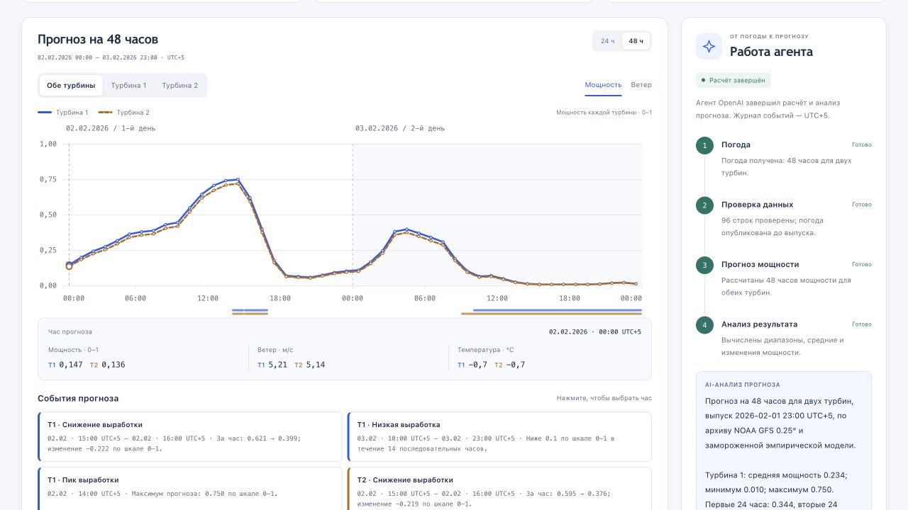

Увидьте следующие 48 часов.
часов прогноза
Выпуск 01.02.2026 · 23:00 UTC+5
Архив NOAA GFS
Полнота и публикация
Фиксированная модель
Объяснение OpenAI
Сокращённый монтаж этапов расчёта.
Сравните выпуски. Спросите о конкретных часах.
02.02 · 14:00 UTC+5
Источник: выбранный прогноз.
Сравнение · История · CSV

Реальный интерфейс · выпуск 1 февраля 2026